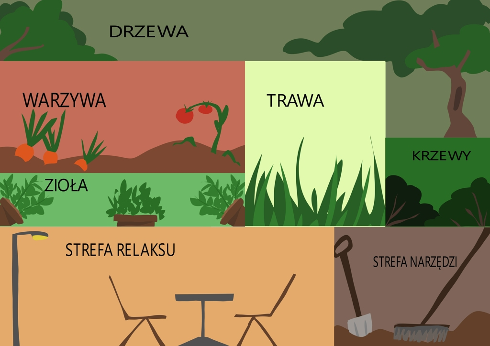
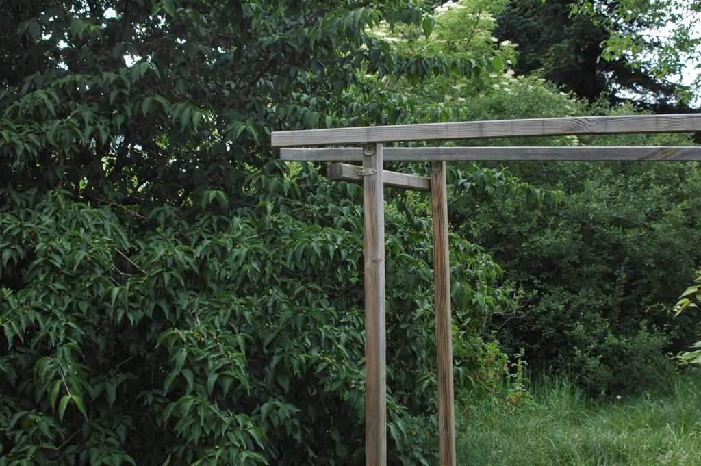
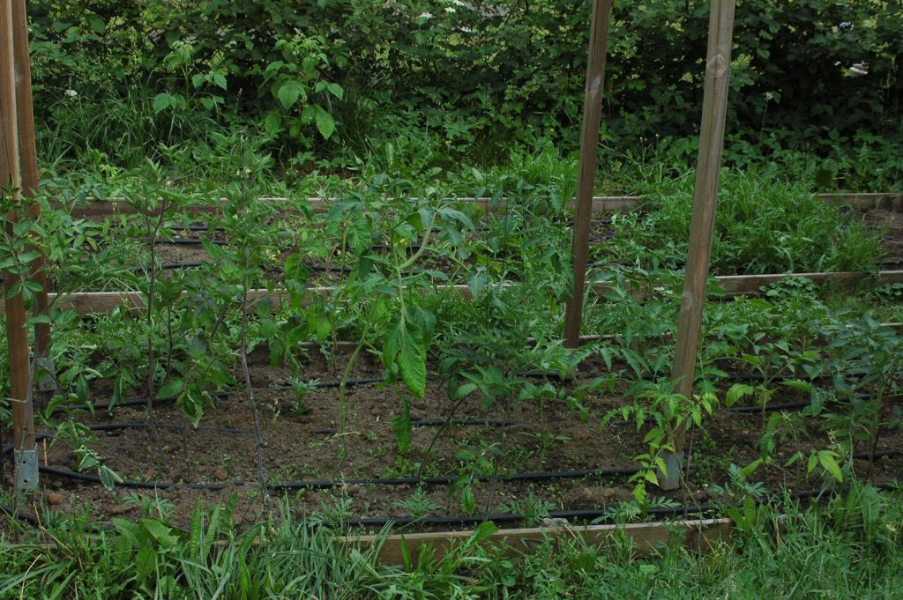
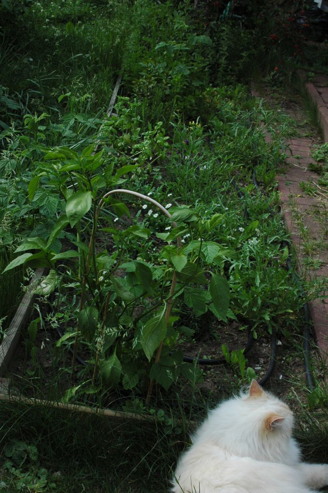
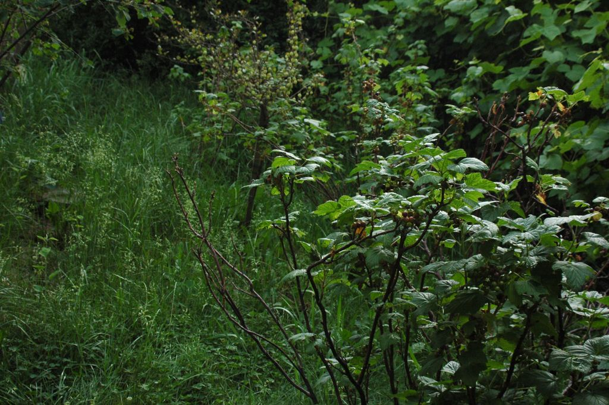
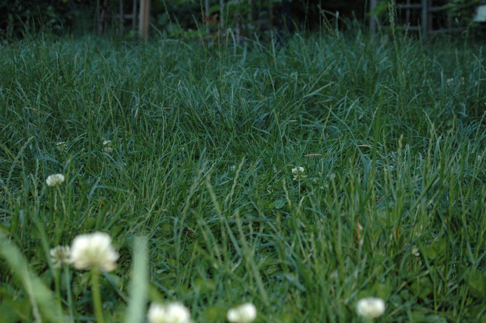
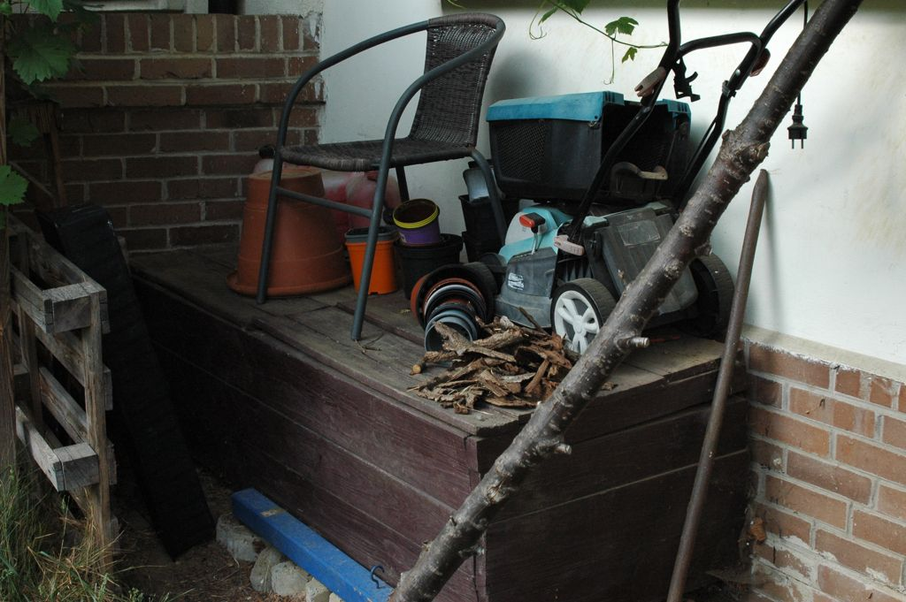

Strefa Relaksu
Mamy też małą strefe do relaksu gdzie podczas lata siedzimy oraz jemy i rozmawiamy.


W moim ogrodzie rosną różne niestandardowe drzewa owocowe, takie jak dereń jadalny, aronia, tarnina, świdośliwa i czarny bez.

Tradycyjnie już od wielu lat w naszym warzywniaku królują różne odmiany pomidorów i rukola.

W moim ogrodzie rosną różne zioła lecznicze, takie jak mięta, rozmaryn, tymianek i natka pietruszki, których czasami pilnuje nasz kot.

W moim ogrodzie rosną różne krzewy owocowe, takie jak porzeczka czarna i czerwona, agrest, jeżyna i malina. Dodatkowo przy płocie rosną winogrona.

Zamiast tradycyjnego wypielęgnowanego trawnika, w moim ogrodzie trawa rośnie jako łąka z minimalną ilością wykaszania jej. W ten sposób w ogrodzie mamy więcej owadów i oszczędzamy wodę.

Mamy też małą strefe do relaksu gdzie podczas lata siedzimy oraz jemy i rozmawiamy.
Mamy rówinież specjane miejsce na narzędzia ogrodowe, co pomaga utrzymać porządek w ogrodzie.

Copyright © Hanna Głąb s36313